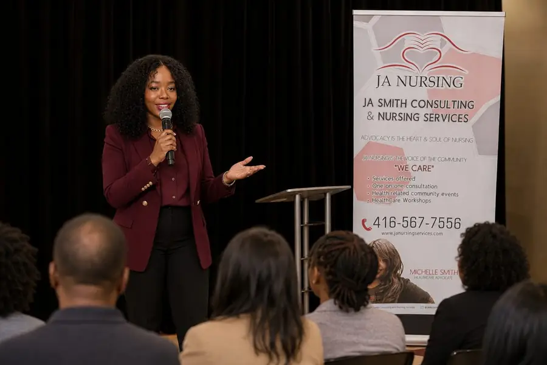
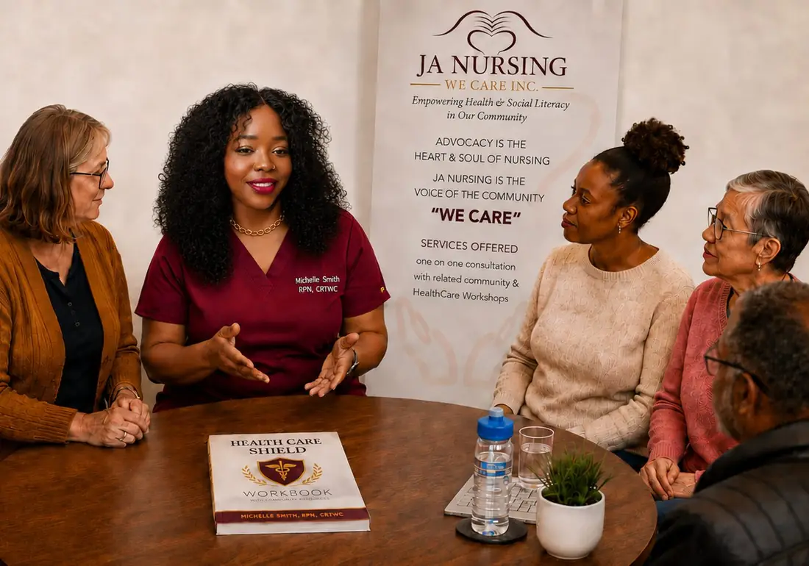

Get a nurse in your corner.
Practical support, tools and education to help you understand, organize and advocate for your health.
Serving the Greater Toronto Area and surrounding areas. In person, by phone and online.
Start here
How can Michelle help?
Three different situations, three different kinds of support. Pick the one that sounds like you.
I need help with my health.
A diagnosis, appointments, referrals, caregiving, a disability claim, confusing paperwork, or simply trying to understand what is going on.
- One on one navigation and advocacy
- Caregiver and family support
- Disability and return to work
I want to organize my health.
Keep your health history where you can actually find it. Appointments, medications, doctors, tests, results, questions and medical history, all in one place.
- A personal health organizer you fill in once
- An appointment companion you carry with you
- Individual, caregiver and bulk copies
I represent an organization.
Give your people practical tools to better navigate their health. Speaking, workshops, health education programs and consulting.
- Speaking and workshops
- Health Care Shield programs
- Consulting and education

The Health Care Shield
Your health information, all in one place.
Most people keep their health history in three places at once: a drawer, a phone, and their memory. The Shield is one book you fill in and carry, so the answer is in your hands when somebody asks for it.
- Medications, doctors and emergency contacts
- Appointments, questions and what was actually said
- Tests, results and family health history
- Written in plain language, with room to write
Individual copies, caregiver copies and bulk orders for organizations.

For organizations
Practical health education your people can actually use.
Seniors organizations, employers, associations, churches, non profits, caregiver organizations and conferences bring Michelle in to do three things: speak, supply tools, or build a program alongside them.
- Speaking and workshops. Health navigation, self advocacy, caregiving, workplace wellness, disability and return to work, healthy aging
- Health Care Shield programs. Bulk copies, member and employee programs, community distributions
- Consulting and education. Program development, health literacy initiatives, workplace and community education

Michelle Smith, RPN, CRTWC
She has been the nurse. She has also been the patient.
In 2017, while working as a nurse at one of Toronto's largest hospitals, Michelle became ill and found herself navigating the disability system from the other side. Even with the training and the vocabulary, she was buried in paperwork, financial uncertainty and a process nobody explained.
The question that came out of it is the reason this practice exists. If this can happen to a health care professional, what is happening to everyone else?
Everyone deserves the right care and the right knowledge, because lack of knowledge is the greatest disease.Michelle Smith, RPN, CRTWC
Our social impact
A portion of JA Smith Consulting and Nursing Services proceeds supports JA Nursing We Care Inc., a community based non profit founded in 2015.
Not sure which door is yours?
Tell Michelle what is going on. She will point you at the right next step, even if that step is not a paid one.